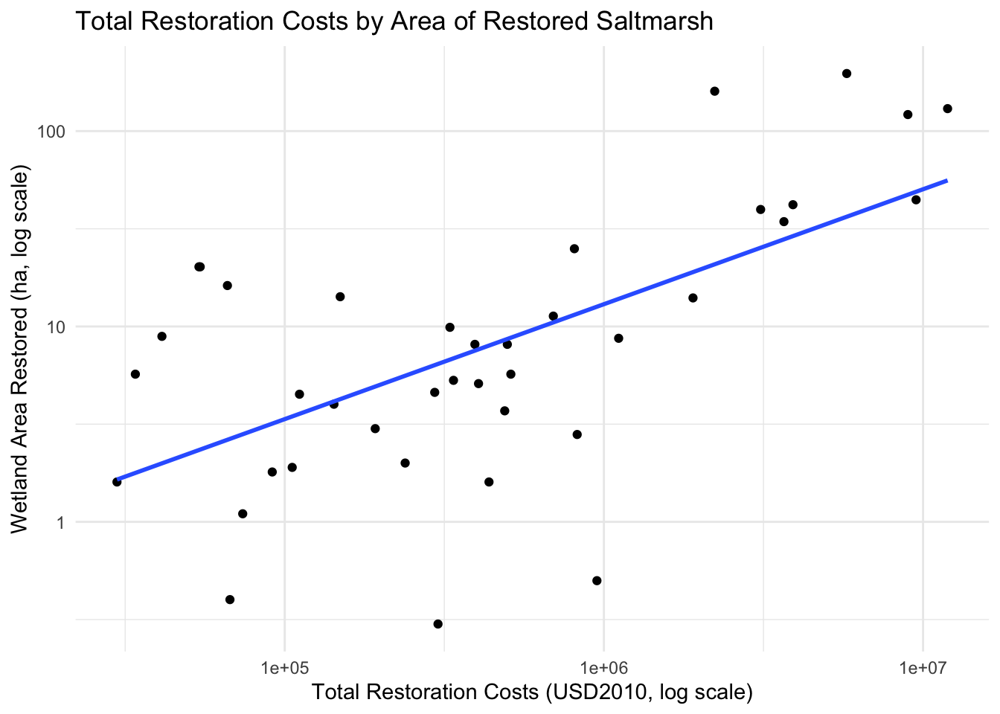

Coastal wetlands provide a natural defense against storm surges and the effects of sea-level rise. They act like a sponge that dissipates wave impacts and reduces flood risk. Benefit transfer analysis can be used to determine the value of a 60 hectare salt marsh wetlands in Huntington Beach, California.
Data
The analysis will pull from these two studies:
Bayraktov et al. (2015): a meta-analysis of coastal wetland restoration costs. Specifically, you have access to the mangrove and salt marsh databases.
You have part of the dataset of Bayraktov et al. (2015) and it has the following information:
1) study_cluster: research belonging to a specific year
2) wetland_type: mangrove or saltmarsh
3) observation: research ID
4) reference: authors
5) ref_year: publication year
6) country: country where the restoration project took place
7) area_ha: restoration area
8) total_cost_2010: total restoration cost in USD2010
Part 1: Restoration costs
You will employ a benefit transfer to find the costs of restoring 60 hectares of wetland.
Inspect the dataset. What wetland type is most appropriate for your analysis? Filter the dataset for that wetland type.
library(tidyverse)
── Attaching core tidyverse packages ──────────────────────── tidyverse 2.0.0 ──
✔ dplyr 1.1.4 ✔ readr 2.1.5
✔ forcats 1.0.0 ✔ stringr 1.5.1
✔ ggplot2 3.5.1 ✔ tibble 3.2.1
✔ lubridate 1.9.3 ✔ tidyr 1.3.1
✔ purrr 1.0.2
── Conflicts ────────────────────────────────────────── tidyverse_conflicts() ──
✖ dplyr::filter() masks stats::filter()
✖ dplyr::lag() masks stats::lag()
ℹ Use the conflicted package (<http://conflicted.r-lib.org/>) to force all conflicts to become errors
library(here)
here() starts at /Users/madisoncalbert/Documents/BREN/Website/madicalbert.github.io
rm(list =ls())# Load the datacost_df <-read_csv(here("posts/2024-12-17-benefits-transfer/cost_df.csv"))
Rows: 271 Columns: 8
── Column specification ────────────────────────────────────────────────────────
Delimiter: ","
chr (3): wetland_type, reference, country
dbl (5): study_cluster, observation, ref_year, area_ha, total_cost_2010
ℹ Use `spec()` to retrieve the full column specification for this data.
ℹ Specify the column types or set `show_col_types = FALSE` to quiet this message.
# Filter for saltmarshsaltmarsh_df <- cost_df %>%filter(wetland_type =="saltmarsh") %>%drop_na()
We want saltmarsh wetlands for our analysis.
Create a new variable with the restoration costs per hectare. Then, choose one of the research studies and estimate the total costs of restoring 60 hectares in Huntington Beach. Explain your choice.
# Create a new variable with the restoration costs per hectaresaltmarsh_df <- saltmarsh_df %>%mutate(cost_per_ha = total_cost_2010 / area_ha)# Choose one of the research studiessaltmarsh_df %>%filter(country =="USA") %>%filter(area_ha >=60)
# A tibble: 4 × 9
study_cluster wetland_type observation reference ref_year country area_ha
<dbl> <chr> <dbl> <chr> <dbl> <chr> <dbl>
1 1 saltmarsh 2 Adams CS, Ben… 1998 USA 160
2 18 saltmarsh 75 Milano G 1999 USA 122.
3 26 saltmarsh 103 Society for E… 2007 USA 197.
4 29 saltmarsh 106 Society for E… 2008 USA 130.
# ℹ 2 more variables: total_cost_2010 <dbl>, cost_per_ha <dbl>
# estimate the total costs of restoring 60 hectares in Huntington Beach based on observation #106total_cost_60_ha <- saltmarsh_df %>%filter(observation ==106) %>%pull(cost_per_ha) *60total_cost_60_ha
[1] 5496802
To choose a research study, I filtered for projects in the USA with an area greater than or equal to 60 hectares. From these four results, I consulted with the larger data set from the Bayraktov et al. (2015) study to determine that observation #106 was a project in the San Francisco Bay area of California. Because our restoration site is in Huntington Beach, California, I chose observation #106 as the most appropriate for our analysis based on geographic location. Based on the restoration cost per hectare for observation #106, the total cost of restoring 60 hectares in Huntington Beach is $5,496,801.63
We are interested in the marginal cost of each additional hectare restored. Make a scatter plot of hectares on the y-axis and total restoration costs on the x-axis in the USA. Describe the relationship between total costs and wetland area restored.
#filter for only USAsaltmarsh_usa <- saltmarsh_df %>%filter(country=="USA")# Scatter plot of hectares on the y-axis and total restoration costs on the x-axis in the USAsaltmarsh_usa %>%ggplot(aes(x = total_cost_2010, y = area_ha)) +geom_point() +geom_smooth(method ="lm", se =FALSE) +scale_x_log10() +# Log transform x-axisscale_y_log10() +# Log transform y-axis labs(title ="Total Restoration Costs by Area of Restored Saltmarsh",x ="Total Restoration Costs (USD2010, log scale)",y ="Wetland Area Restored (ha, log scale)") +theme_minimal()
`geom_smooth()` using formula = 'y ~ x'

Scatter plot of total restoration costs and hectares of saltmarsh wetland restored in the USA
The scatter plot shows a positive relationship between total restoration costs and hectares of wetland area restored. As the area of wetland restoration increases, the total restoration costs also increases. The relationship appears to be linear, with a few outliers that have higher restoration costs for a given area of wetland restoration.
Run the following regression: total_cost_2010 = a + b*area_ha + error. Using the outcome of this regression, recalculate the total cost of restoring 60 hectares of wetland.
# Run the regressionlm_cost <-lm(total_cost_2010 ~ area_ha, data = saltmarsh_usa)summary(lm_cost)
Call:
lm(formula = total_cost_2010 ~ area_ha, data = saltmarsh_usa)
Residuals:
Min 1Q Median 3Q Max
-5239511 -541661 -352808 87971 7111292
Coefficients:
Estimate Std. Error t value Pr(>|t|)
(Intercept) 446092 368986 1.209 0.234
area_ha 43861 7093 6.183 3.55e-07 ***
---
Signif. codes: 0 '***' 0.001 '**' 0.01 '*' 0.05 '.' 0.1 ' ' 1
Residual standard error: 2011000 on 37 degrees of freedom
Multiple R-squared: 0.5082, Adjusted R-squared: 0.4949
F-statistic: 38.23 on 1 and 37 DF, p-value: 3.546e-07
# Recalculate the total cost of restoring 60 hectares of wetlandtotal_cost_60_ha_lm <-coef(lm_cost)[1] +coef(lm_cost)[2] *60total_cost_60_ha_lm
(Intercept)
3077755
The total cost from the regression is $3,077,755 to restore 60 hectares of wetland in Huntington Beach. This estimate is much lower than the previous estimate based on observation #106.
Describe one way you could improve your cost analysis and valuation.
One way to improve the cost analysis and valuation is to include additional variables that may influence the restoration costs. For example, factors such as the type of restoration activities, the condition of the wetland site, and the availability of resources could impact the total restoration costs. By including these variables in the analysis, we can better estimate the costs of restoring wetlands and provide more accurate benefit transfer estimates.
Part 2: Storm protection benefits
Costanza et al. (2021) analyzed 1288 coastal storms globally to calculate the storm protection benefits from wetlands. The authors obtained the following regression estimates:
wetland area in the swath of the storm (wetlands),
the volume of water in the ocean proximal to the storm landfall (volume),
and the year of the storm minus 1900 (time) as a (non-transformed) linear variable.
Interpret the coefficient on ln(wetlands). (Hint: notice that the dependent variable is also log-transformed)
The coefficient on ln(wetlands) is -0.236. This coefficient indicates that a 1% increase in wetland area in the swath of the storm is associated with a 0.236% decrease in damages relative to GDP. Because both the dependent variable (damages/GDP) and the wetland area are log-transformed, this coefficient captures the percentage change in damages/GDP resulting from a 1% change in wetland area. In other words, a larger wetland area provides greater storm protection benefits by reducing the damages caused by coastal storms.
Calculate the avoided damage of 60 additional hectares of wetlands in case of a storm like Hurricane Hilary. You have the following information: damages = $18 million, and the available wetland area today is 72 hectares. Assume the GDP doesn’t change (only damage moves), and all the remaining variables remain constant.